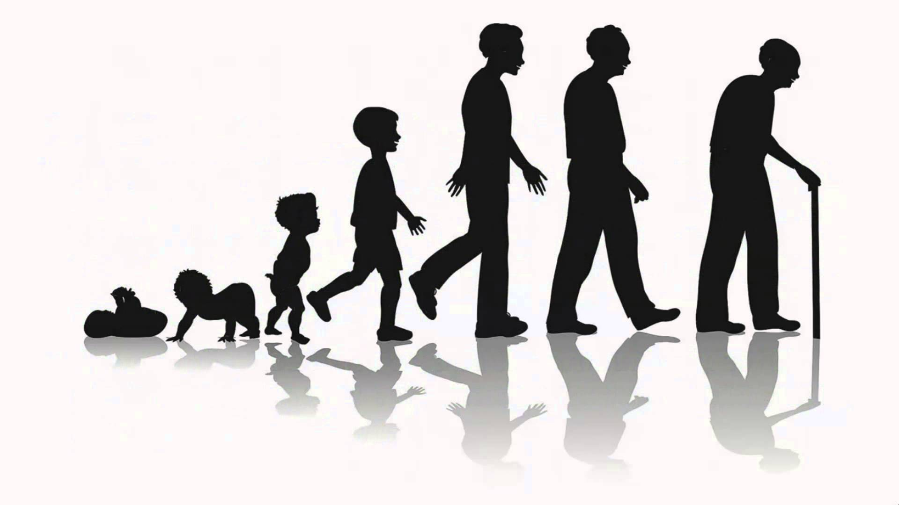

॥ অধ্যায় ২, শ্লোক ১৩ ॥
দেহিনোঽস্মিন্ যথা দেহে কৌমারং যৌবনং জরা ।
তথা দেহান্তরপ্রাপ্তির্ধীরস্তত্র ন মুহ্যতি ॥ ১৩ ॥
সরল ভাবার্থ:
যেমন এই দেহে আত্মা শৈশব, যৌবন ও বার্ধক্য অতিক্রম করে,
তেমনি মৃত্যুর পরে অন্য দেহ গ্রহণ করে।
জ্ঞানী ব্যক্তি এতে বিভ্রান্ত হয় না।
ধর্মীয় প্রেক্ষাপট ও গভীর ব্যাখ্যা:
এই শ্লোকটি গীতার অন্যতম যুক্তিভিত্তিক ও বাস্তব উদাহরণপূর্ণ ব্যাখ্যা।
শ্রীকৃষ্ণ দৈনন্দিন জীবনের অভিজ্ঞতাকেই দর্শনের ভিত্তি বানিয়েছেন।
আমরা সবাই জানি—শিশু, যুবক ও বৃদ্ধের দেহ আলাদা,
কিন্তু ব্যক্তি একই থাকে।
এই পরিবর্তনকে আমরা স্বাভাবিকভাবেই গ্রহণ করি।
ঠিক সেইভাবেই মৃত্যু হলো দেহ পরিবর্তনের আরেকটি ধাপ।
আত্মা সেখানে অপরিবর্তিত থাকে।
কিন্তু মানুষ মৃত্যুকে ভয় পায়, কারণ সে দেহকেই নিজের আসল পরিচয় মনে করে।
গীতা এই ভুল ধারণা ভাঙতে চায়।
যে ব্যক্তি এই সত্য উপলব্ধি করে, সে জীবনের পরিবর্তনগুলোকে শান্তভাবে গ্রহণ করতে পারে।
এই শ্লোক আমাদের শেখায় ধৈর্য ও প্রজ্ঞার গুরুত্ব।
জীবনের প্রতিটি পর্যায় পরিবর্তনশীল,
কিন্তু আত্মা স্থির।
এই উপলব্ধিই মানুষকে দুঃখ, ভয় ও বিভ্রান্তি থেকে মুক্ত করে।
গীতার ভাষায়, সেই ব্যক্তিই ‘ধীর’—যিনি পরিবর্তনের মাঝেও স্থির থাকতে পারেন।

[ছবি: শিশুকাল থেকে বার্ধক্য পর্যন্ত দেহ পরিবর্তনের প্রতীকী চিত্র।]